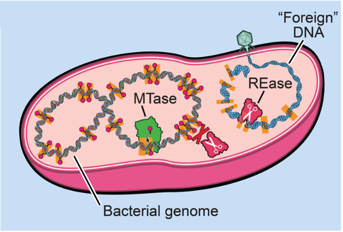
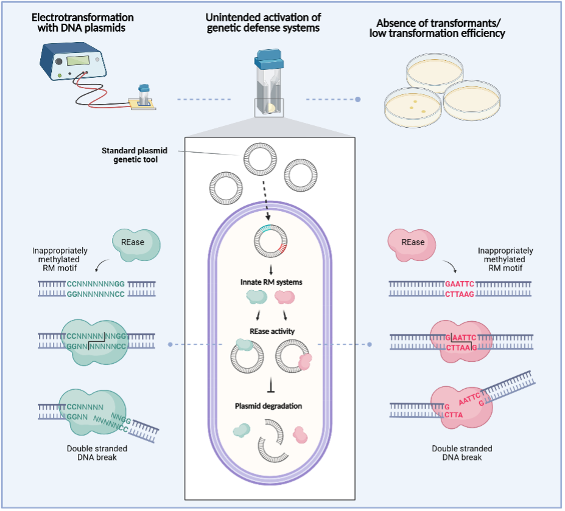
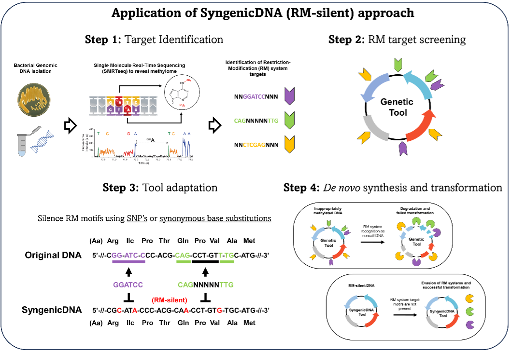
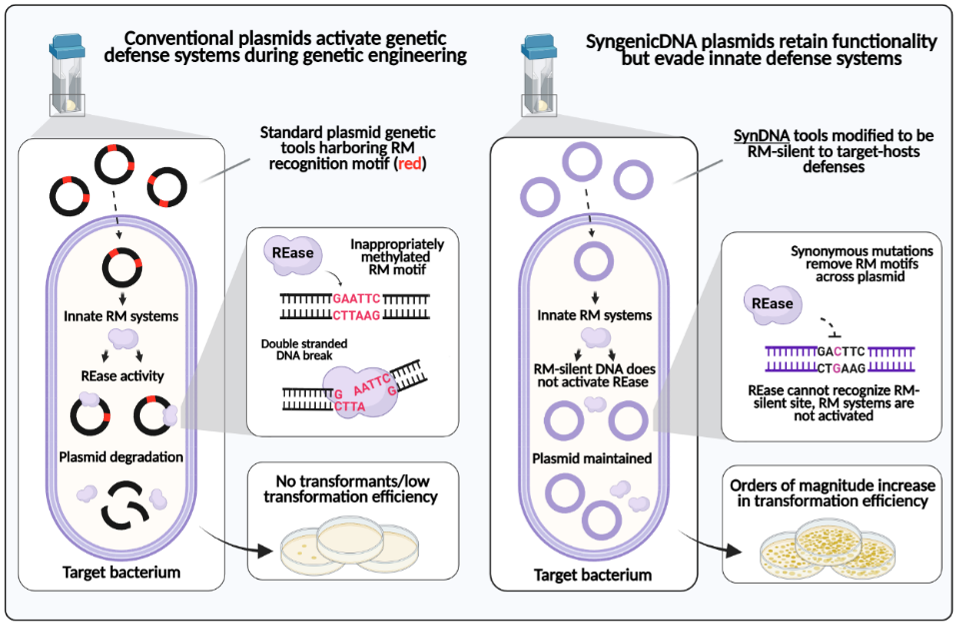
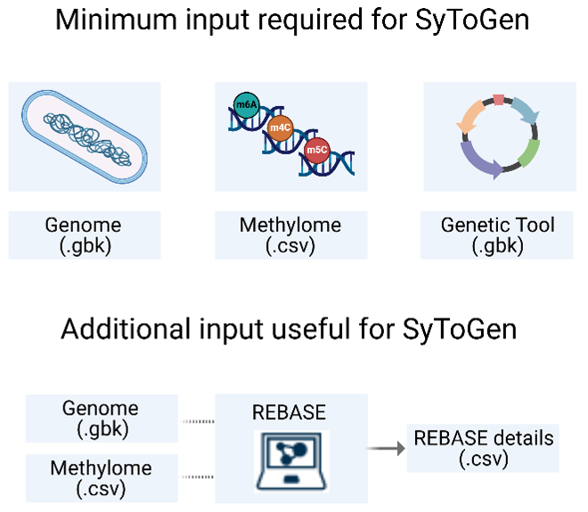

The Problem of Genetic Intractability
Genetic intractability, the resistance of a bacterium to genetic manipulation using modern in vitro techniques, remains one of the most persistent obstacles in bacteriology. This problem spans virtually every branch of the field: pathogens, commensals, environmental isolates, industrial strains, and organisms central to microbiome research.
Across bacteriology, most bacterial lineages cannot be modified with standard genetic tools, leaving major gaps in our ability to investigate their biology or engineer them for research and applied purposes. Further, the problem of genetic intractability persists despite the remarkable progress and broad availability of advanced genome-editing technologies (including CRISPR interference systems, programmable nucleases, CRISPR–transposon platforms, integrases, recombinases, and newer gene-delivery approaches) because these methods still depend on the successful introduction of DNA into the cell.
Consequently, our understanding and practical use of bacteria are being shaped by a narrow set of genetically tractable model organisms, while the vast majority remain beyond the reach of modern genetic tools and methods.
The Main Cause of Genetic Intractability
A major driver of genetic intractability in bacteria is the activity of restriction-modification (RM) systems. These systems evolved to defend bacterial genomes from invading DNA such as bacteriophage and other mobile genetic elements that seek to take control of the cell. Through the coordinated action of a restriction enzyme (REase) and its partner methyltransferase (MTase), each chromosome is protected by the placement of specific methylation "marks" within short DNA motifs, and the combined activity of multiple RM systems in a cell generates a distinctive signature (the methylome) that identifies the chromosome as 'self'.

To protect the integrity of the bacterium's chromosome, a DNA sequence that invades the cell and lacks this signature is recognized as foreign and degraded by restriction enzymes.Unfortunately, human-made genetic tools (plasmids, integrative vectors, linear sequences, and other engineered constructs) are subject to these same defenses, meaning that vectors which function reliably in model organisms are often ineffective when applied to non-model species or even divergent strains (e.g. clinical isolates) within an otherwise tractable species. Such outcomes often lead researchers to conclude that transformation protocols used are faulty, when in reality the incoming DNA is being selectively destroyed by the target bacteria's restriction systems before it can establish itself; and genetic intractability persists.

Using SyngenicDNA and SyToGen to Address This Problem
SyToGen was developed to enable any bacteriologist to systematically overcome the RM barrier in their bacteria of interest; by facilitating the redesign of genetic constructs so they are no longer recognized by RM systems upon transformation. The platform is built on the SyngenicDNA "RM-silencing" strategy published by our group in 2019, which showed that precise, codon-aware elimination of RM motifs from the DNA sequences of genetic tools can enable robust and reliable transformation of previously genetically intractable bacteria.
SyngenicDNA works in four steps. First, the complete set of RM system motifs for a given strain is defined, typically from PacBio single-molecule real-time (SMRT) methylome data or curated REBASE annotations. Second, these motifs are mapped across a genetic construct to identify every site that would trigger restriction and degradation of the DNA. Third, sequence positions within each motif are evaluated to determine where synonymous, codon-concordant changes can be introduced without altering the underlying functionality of the tool, and while maintaining the codon bias of the strain of interest (preventing introduction of rare or unfavorable codons). Finally, the edited sequence is reassembled into an RM-silent, SyngenicDNA version that retains full function but will not be degraded upon entry into the cell.

Multiple studies have applied RM-silencing and found it effective across bacterial genera, species, subspecies, and strain backgrounds. Even very subtle sequence edits (single synonymous substitutions or minor adjustments to the overall architecture of a genetic tool) can yield orders-of-magnitude increases in transformation efficiency. Moreover, RM-silencing has improved both electroporation- and conjugation-based transformation efforts.
However, although the strategy is highly effective, manually introducing RM-silencing edits often required specialized knowledge of bacterial epigenetics, motif structure, sequence engineering, and codon constraints, and demanded careful tracking of multiple edits to avoid reintroducing RM motifs with each alteration. These requirements made it challenging for many researchers to apply SyngenicDNA, limiting its adoption as a routine approach for overcoming genetic intractability across diverse bacterial taxa.

Thus, SyToGen was developed to remove these challenges and eliminate the need for manual RM-silencing. It does so by automating motif screening, codon-bias–aware sequence redesign, and reconstruction of the edited construct. Its purpose is to enable any researcher to overcome the RM barrier in their strain of interest without requiring specialized expertise in RM biology or sequence engineering.
What the SyToGen Module Does
SyToGen implements the SyngenicDNA RM-silencing strategy as a structured, end-to-end workflow. In practice, generating an RM-silent construct requires only three inputs: a PacBio-defined genome file and methylome file (or a curated REBASE motif profile) for the strain of interest, and a well-annotated GenBank file of the genetic tool.

The genome (.gbk) provides the codon-usage patterns needed to guide synonymous edits; the methylome (.csv) provides the specific motifs targeted by the strain’s RM systems; and the annotated genetic tool (.gbk) provides details on the functional and structural elements present so that RM-silencing edits are introduced only in positions that preserve biological function. With these inputs, SyToGen carries out four coordinated steps to redesign the construct into an RM-silent version. First, it checks the RM motif profile and reviews the structure and annotation of the genetic tool to ensure the sequence is suitable for targeted RM-silencing. Second, it maps all RM motifs across the construct, marking every position that would be subject to restriction in the target strain. Third, it determines which nucleotide changes within each motif can be made synonymously and in a manner consistent with the strain's codon-usage patterns. Finally, SyToGen assembles these edits into a revised sequence that preserves the function of the original genetic tool while minimizing recognition by the host's RM systems.
SyToGen Modules
Although SyToGen can run the entire workflow as a single automated process, the platform also provides four individual modules that correspond to each stage of the RM-silencing pipeline. Together, these modules (MyMotifs, MotifFinder, CodonBias, and SyToGen) allow users to inspect, refine, or run each step independently when greater control is needed.
MyMotifs
MyMotifs allows users to define, import, or edit the restriction-modification motifs for the user's bacterial strain. Motifs may be derived from PacBio methylome data, REBASE annotations, or manual curation. Accurate motif definition is essential, as these motifs specify the sequence positions that must be removed or altered during RM-silencing.
MotifFinder
Screens a user-provided GenBank file and maps all RM motifs across the genetic construct. It identifies every position that would be susceptible to restriction and verifies that the tool's annotation is suitable for downstream sequence redesign.
CodonBias
Calculates strain-specific codon-usage patterns from the genome. This information guides the synonymous substitutions introduced during RM-silencing, ensuring that edits remain consistent with the bacterial host's codon-usage preferences.
SyToGen
Implements the core SyngenicDNA redesign process. Using the motif map and codon-usage information, SyToGen proposes synonymous edits, generates an RM-silent version of the construct, and provides detailed reports and alternative sequence options for user review.